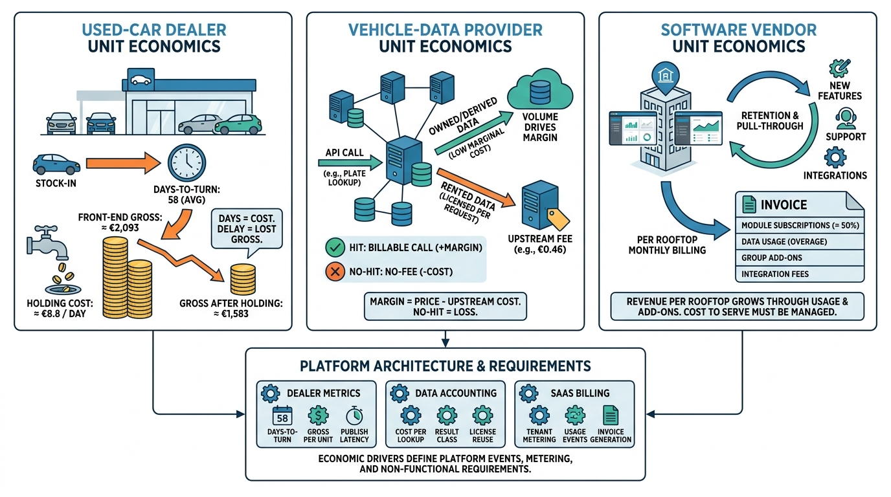

Part I — MARKET: The Business of Vehicle Data and Dealer Software
Margins, Days and Lookups: The Economics of Dealers, Data and SaaS

Image generated by Google Gemini (gemini-3-pro-image-preview)
Part I — MARKET: The Business of Vehicle Data and Dealer Software

Image generated by Google Gemini (gemini-3-pro-image-preview)